AGU ADVANCES · 2026 · 逐句中英对照 · CC BY 4.0
论文信息Article identity
由海洋动力过程和远程强迫主导的 CO₂ 驱动赤道太平洋增暖型态的阶段转变
Phase Transition of CO₂‐Driven Equatorial Pacific Warming Pattern Governed by Ocean Dynamics and Remote Forcing
Dirk Olonscheck¹ 和 Sarah M. Kang¹
Dirk Olonscheck1 and Sarah M. Kang1
¹马克斯·普朗克气象研究所，德国汉堡
1Max Planck Institute for Meteorology, Hamburg, Germany
论文说明Article notes
研究论文 10.1029/2026AV002437
RESEARCH ARTICLE 10.1029/2026AV002437
同行评审Peer Review
本文的同行评审历史以 PDF 形式收录于补充信息中。
The peer review history for this article is available as a PDF in the Supporting Information.
要点Key Points
区域 CO₂ 强迫试验揭示了赤道太平洋增暖型态两阶段演变背后的机制
Regional CO₂ forcing experiments reveal mechanisms behind a two‐phase equatorial Pacific warming pattern
初始纬向海表温度梯度的增强源于赤道上升流增强和热带辐合带（ITCZ）向北移动，这两种变化由赤道和北半球（NH）CO₂ 强迫驱动
Initial zonal SST strengthening arises from enhanced equatorial upwelling and a northward ITCZ shift driven by equatorial and NH CO₂ forcing
南半球 CO₂ 强迫持续削弱纬向海表温度梯度
Southern Hemisphere CO₂ forcing persistently weakens the zonal SST gradient
摘要Abstract
气候模式一致且稳健地预估，随着 CO₂ 增加，将出现类似厄尔尼诺的增暖；然而，近期观测呈现相反变化，即纬向海表温度梯度增强。
Climate models robustly project an El Niño–like warming under rising CO₂, yet recent observations show the opposite with enhanced zonal SST gradients.
长期预估是否适用于解释历史趋势，仍存疑问。
Whether the long‐term projection is relevant for interpreting historical trends remains questionable.
通过 CO₂ 突增至四倍（4xCO₂）试验的大集合，我们识别出赤道太平洋增暖的两阶段转变：梯度先增强，随后在长期尺度上减弱。
Using a large‐ensemble of abrupt 4xCO₂ experiment, we identify a two‐phase transition in equatorial Pacific warming: an initial gradient strengthening followed by long‐term weakening.
为分离其内在机制，我们在一组对海洋动力过程表征程度不同的层级模式中，在离散纬度带施加规定的 CO₂ 强迫。
To isolate the underlying mechanisms, we prescribe CO₂ forcing over discrete latitudinal bands in a model hierarchy that varies the degree to which ocean dynamics are represented.
虽然初始增强通常被归因于与气候态上升流相关的海洋动力恒温器机制，但我们的赤道强迫试验凸显了海洋环流变化的作用。
While the initial strengthening is commonly attributed to ocean dynamical thermostat associated with climatological upwelling, our equatorial forcing experiment highlights the role of ocean circulation changes.
我们还揭示了另一种机制：在远程北半球非赤道强迫作用下，哈德莱环流的位移引发大气反馈。
We further reveal another mechanism involving atmospheric feedbacks via Hadley cell shifts under remote Northern Hemisphere off‐equatorial forcing.
这些快速响应通过缓慢的海洋调整，转变为梯度减弱。
These fast responses transition to weakened gradients through slow ocean adjustments.
相比之下，南半球强迫导致梯度持续减弱。
In contrast, Southern Hemisphere forcing induces a persistent gradient weakening.
我们的结果表明，观测到的海表温度趋势可能反映了对 CO₂ 的快速受迫响应。
Our results suggest that observed SST trends may reflect a fast, forced response to CO₂.
通俗摘要Plain Language Summary
气候模式一致且稳健地预估，在全球增暖背景下，热带太平洋海表温度梯度将减小，东部热带太平洋的增暖大于西部。
Climate models robustly project a decreased tropical Pacific SST gradient under global warming with more warming in the eastern tropical Pacific than the western part.
相比之下，观测呈现相反变化，即纬向海表温度梯度增强。
In contrast, observations show the opposite with enhanced zonal SST gradients.
气候模式的长期预估是否适用于解释观测趋势，仍存疑问。
Whether the long‐term projection by climate models is relevant for interpreting observed trends remains questionable.
通过理想化的 CO₂ 驱动增暖试验，我们识别出赤道太平洋增暖的两阶段转变：海表温度梯度先增强，随后在长期尺度上减弱。
Using idealized CO₂‐driven warming experiments, we identify a two‐phase transition in equatorial Pacific warming: an initial SST gradient strengthening followed by a long‐term weakening.
为分离驱动这一转变的机制，我们在全耦合模式和简化模式中，分别施加全球 CO₂ 强迫，以及仅作用于离散纬度带的 CO₂ 强迫。
To isolate the mechanisms driving the transition, we prescribe CO₂ forcing globally and only over discrete latitudinal bands both in a fully coupled and a simplified model.
我们发现，初始增强由两类强迫共同引起：涉及海洋环流变化的赤道强迫，以及通过哈德莱环流位移产生大气反馈的远程北半球非赤道强迫。
We find that the initial strengthening is caused by both equatorial forcing involving ocean circulation changes and remote Northern Hemisphere off‐equatorial forcing involving atmospheric feedbacks via Hadley cell shifts.
这些快速响应通过缓慢的海洋调整，转变为梯度减弱。
These fast responses transition to weakened gradients through slow ocean adjustments.
相比之下，南半球强迫导致梯度持续减弱。
In contrast, Southern Hemisphere forcing induces a persistent gradient weakening.
我们的结果表明，观测到的海表温度趋势可能反映了对 CO₂ 的快速受迫响应。
Our results suggest that observed SST trends may reflect a fast, forced response to CO₂.
1. 引言1. Introduction
在 CO₂ 浓度上升条件下，气候模式模拟最稳健的特征之一是出现“类厄尔尼诺”增暖型态，其特征为赤道太平洋沿线的纬向海表温度（SST）梯度减小。
One of the most robust features of climate model simulations under rising CO₂ concentrations is the emergence of an “El Niño–like” warming pattern, characterized by a reduced zonal sea surface temperature (SST) gradient along the equatorial Pacific.
自第二代海洋—大气耦合大环流模式起，这一型态就已明显出现（Knutson & Manabe, 1995; Meehl & Washington, 1996），并被广泛视为 CO₂ 引起的气候变化的标志性特征。
This pattern has been evident since the second generation of coupled ocean‐atmosphere general circulation models (Knutson & Manabe, 1995; Meehl & Washington, 1996) and is widely regarded as a hallmark of CO₂‐induced climate change.
然而，与此形成鲜明对比的是，尽管历史上的全球增暖主要由 CO₂ 浓度增加驱动，过去四到五十年的观测却揭示出相反的趋势（例如，Byrne et al., 2025; J.‐J. Luo et al., 2018; Seager et al., 2019; Wills et al., 2022）：纬向海表温度差异增强，并伴随东部热带太平洋的显著降温。
In stark contrast, however, although historical global warming has been driven primarily by increasing CO₂ concentrations, observations over the past four to five decades reveal an opposite trend (e.g., Byrne et al., 2025; J.‐J. Luo et al., 2018; Seager et al., 2019; Wills et al., 2022): an enhanced zonal SST contrast associated with pronounced cooling in the eastern tropical Pacific.
这种类似拉尼娜的演变在以下方面发挥了重要作用：减缓全球地表增暖速率（Kosaka & Xie, 2013），增强沃克环流（Kang et al., 2025; Watanabe et al., 2023），加强北大西洋热带气旋活动、同时抑制北太平洋热带气旋活动（Sobel et al., 2023），改变高影响风暴的统计特征（Zhao & Knutson, 2024），以及促成美国西部（Seager et al., 2023）和东亚（Kim et al., 2025）的干燥化趋势。
This La Niña–like evolution has played a major role in moderating the rate of global surface warming (Kosaka & Xie, 2013), strengthening the Walker circulation (Kang et al., 2025; Watanabe et al., 2023), intensifying North Atlantic tropical cyclone activity while suppressing it in the North Pacific (Sobel et al., 2023), altering the statistics of high impact storms (Zhao & Knutson, 2024), and contributing to drying trends in the western United States (Seager et al., 2023) and East Asia (Kim et al., 2025).
鉴于热带太平洋海表温度型态在塑造全球气候响应方面的核心作用，模式与观测之间持续存在的差异使未来预估的可靠性面临关键疑问，也凸显了更好地理解这一差异背后原因的迫切需要。
Given the central role of tropical Pacific SST patterns in shaping global climate responses, the persistent discrepancy between models and observations raises critical questions about the reliability of future projections and highlights the urgent need to better understand its underlying causes.
这一差异很可能由内部变率和受迫响应的偏差共同驱动（例如，Byrne et al., 2025; M. Lu & Huang, 2026）；本文重点关注后者。
The discrepancy is likely driven by both internal variability and biases in the forced response (e.g., Byrne et al., 2025; M. Lu & Huang, 2026); here, we focus on the latter.
尽管观测到的增暖型态常被解释为与模式模拟的 CO₂ 长期响应不一致，一个关键问题仍然存在：准平衡响应是否适用于解释瞬态演变？
While the observed warming pattern has often been interpreted as inconsistent with the modeled long‐term response to CO₂, a key question remains: is the quasi‐equilibrated response relevant for interpreting the transient evolution?
如果瞬态响应与平衡响应在性质上不同，那么用长期型态来解释历史趋势可能会产生误导。
If the transient and equilibrium responses are qualitatively distinct, then invoking the long‐term pattern to explain historical trends may be misleading.
事实上，有研究提出，气候系统在初始调整阶段对 CO₂ 的响应不同于较长期的平衡响应（Heede et al., 2020; K. Lu et al., 2021）。
Indeed, the climate system's response to CO₂ during an initial adjustment phase is suggested to differ from the longer‐term equilibrium response (Heede et al., 2020; K. Lu et al., 2021).
观测到的东太平洋降温可能反映了对 CO₂ 强迫的瞬态响应，这一响应与海洋动力恒温器机制有关（Clement et al., 1996）——在该机制中，东部赤道太平洋的气候态上升流将冷的次表层海水带到表面，从而抵消 CO₂ 引起的表面增暖。
The observed cooling in the eastern Pacific may reflect a transient response to CO₂ forcing, associated with the ocean dynamical thermostat (Clement et al., 1996)—a mechanism in which climatological upwelling in the eastern equatorial Pacific brings cold subsurface water to the surface, thereby offsetting the CO₂‐induced surface warming.
然而，随着次表层海水逐渐变暖，这种降温效应会随时间减弱；次表层海水的变暖源于较暖的热带外海水沿副热带环流单元（STC）的次表层分支平流输送，以及 STC 本身同时减弱（Y. Luo et al., 2017）。
However, this cooling effect diminishes over time as subsurface waters gradually warm, due to the advection of warmer extratropical waters along the subsurface branch of the subtropical cell (STC), and a concurrent weakening of the STC itself (Y. Luo et al., 2017).
这些局地海洋过程可能使东部赤道太平洋由 CO₂ 强迫引起的海表温度响应，从初始降温转变为延迟增暖（Heede et al., 2020）。
These local ocean processes may cause the CO₂‐forced SST response in the eastern equatorial Pacific to transition from initial cooling to delayed warming (Heede et al., 2020).
海洋动力恒温器机制响应于局地 CO₂ 强迫，但已有研究表明，赤道太平洋的平均增暖更大程度上由非赤道 CO₂ 强迫驱动（Stuecker et al., 2020）。
The ocean dynamical thermostat operates in response to local CO₂ forcing, yet the equatorial‐mean Pacific warming has been shown to be more strongly driven by off‐equatorial CO₂ forcing (Stuecker et al., 2020).
这种强烈的远程控制作用引出了一个问题：非赤道强迫如何影响赤道太平洋海表温度型态的过渡演变？
This strong remote control raises the question of how off‐equatorial forcing contributes to the transitional evolution of equatorial Pacific SST patterns.
近期研究表明，热带太平洋对北半球（NH）热带外热强迫的响应经历两阶段转变（Tseng et al., 2023），其驱动机制不同于海洋恒温器机制。
Recent studies show that the tropical Pacific response to Northern Hemisphere (NH) extratropical thermal forcing undergoes a two‐phase transition (Tseng et al., 2023), driven by mechanisms distinct from the ocean thermostat.
具体而言，北半球热带外地区由气溶胶引起的降温使哈德莱环流向南移动，削弱信风东风并减少蒸发，从而在初期促进赤道太平洋表面增暖。
Specifically, aerosol‐induced cooling in the northern extratropics shifts the Hadley circulation southward, weakening the trade easterlies and reducing evaporation, which initially promotes surface warming in the equatorial Pacific.
然而，随着时间推移，在副热带地区潜沉的较冷海水被平流输送至赤道太平洋。
Over time, however, colder waters subducted in the subtropics are advected to the equatorial Pacific.
同时，中纬度降温增强了副热带风应力，使北半球副热带环流单元（STC）加强，从而进一步促使赤道太平洋降温。
Simultaneously, midlatitude cooling strengthens subtropical wind stress, intensifying the northern STC, which further contributes to cooling in the equatorial Pacific.
由于这些海洋调整的演变慢于驱动哈德莱环流位移的大气过程，最初由哈德莱环流驱动的增暖，在大约十年内逐渐转变为海洋驱动的降温（Hwang et al., 2024）。
Because these oceanic adjustments evolve more slowly than the atmospheric processes driving the Hadley cell shift, the initial Hadley cell‐driven warming gradually transitions into ocean‐driven cooling over the course of about a decade (Hwang et al., 2024).
综上，为更好地理解赤道太平洋海表温度型态过渡行为背后的机制，我们需要分别评估局地与远程 CO₂ 强迫的作用。
Taken together, we need to separately assess the roles of local and remote CO₂ forcing to better understand the mechanisms underlying the transitional behavior of equatorial Pacific SST pattern.
为此，我们开展了一个包含 30 个成员的 CO₂ 突增至四倍（4xCO₂）模拟集合，并开展了仅在离散纬度带将 CO₂ 增至四倍的针对性试验（图 1；第 2 节）。
To this end, we construct a 30‐member ensemble of abrupt 4xCO₂ simulations, as well as targeted experiments in which CO₂ is quadrupled over discrete latitudinal bands (Figure 1; Section 2).
大集合对于稳健地识别受迫响应中的两阶段转变至关重要。
A large ensemble is essential to robustly identify the two‐phase transition in the forced response.
我们采用 CO₂ 强迫突增的方式，因为它最适合分离响应中的快速和慢速分量。
We adopt an abrupt increase in CO₂ forcing because it is best suited for isolating the fast and slow components of the response.
相比之下，在 CO₂ 每年增加 1% 的情景中，模拟响应体现为两个分量的叠加，而它们的相对贡献随时间演变。
By contrast, in a 1% per year CO₂ increase scenario, the simulated response reflects a superposition of both components, with their relative contributions evolving over time.
为分离海洋动力过程的作用，我们使用层级模式重复这些试验；其中既包括与动力海洋模式耦合的大气模式（DOM），也包括与平板海洋模式耦合的大气模式（SOM）。
To isolate the role of ocean dynamics, we repeat these experiments using a model hierarchy that includes both an atmospheric model coupled to a dynamical ocean model (DOM) and one coupled to a slab ocean model (SOM).
我们的目标是明确赤道太平洋海表温度响应 CO₂ 强迫时，其瞬态演变的性质。
Our aim is to clearly establish the nature of the transient evolution of equatorial Pacific SST in response to CO₂ forcing.
我们发现，这一转变源于局地与远程 CO₂ 强迫之间的微妙平衡。
We find that the transition arises from a delicate balance between local and remote CO₂ forcing.
我们的结果表明，观测到的海表温度趋势可能被解释为对 CO₂ 上升的一种瞬态调整的组成部分，而这种调整不同于长期平衡响应。
Our results suggest that the observed SST trends may be interpreted as part of a transient adjustment to rising CO₂ that differs from the long‐term equilibrium response.
2. 数据与方法2. Data and Methods
2.1. 模式与试验设置2.1. Model and Experiment Setup
本研究采用的模式为 MPI‐ESM1.2‐LR，它由海洋模式 MPIOM1.6（运行于 GR15L40 网格）和大气模式 ECHAM6.3（运行于 T63L47 网格）组成；前者直接对海洋生物地球化学模式 HAMOCC6 的示踪物进行平流输送，后者通过地表质量、动量和热量交换，与陆面模式 JSBACH3.2 直接耦合（Mauritsen et al., 2019）。
The model employed in this study is MPI‐ESM1.2‐LR, which consists of the ocean model MPIOM1.6 (run on the GR15L40 grid) that directly advects tracers of the ocean biogeochemistry model HAMOCC6, and the atmosphere model ECHAM6.3 (run on the T63L47 grid) that is directly coupled to the land model JSBACH3.2 through surface exchange of mass, momentum, and heat (Mauritsen et al., 2019).
该模式配置的大气水平分辨率约为 1.8°，海洋水平分辨率约为 1.5°。
This model configuration has an atmosphere of approximately 1.8° and an ocean of approximately 1.5° horizontal resolution.
我们使用全耦合 MPI‐ESM1.2‐LR（DOM）开展一组包含 30 个成员的 CO₂ 突增至四倍（4xCO₂）试验集合。
We run a set of 30‐member ensembles of abrupt 4xCO₂ experiments with the fully coupled MPI‐ESM1.2‐LR (DOM).
施加全球均匀 CO₂ 突增至四倍（4xCO₂）强迫的试验（GLOBAL）积分 150 年。
The experiment with globally uniform abrupt 4xCO₂ forcing (GLOBAL) is integrated for 150 years.
此外，我们开展区域强迫纬度带试验，以区分局地强迫与半球不对称的远程辐射强迫对热带太平洋增暖型态的影响（图 1）。
In addition, we perform regional forcing‐band experiments to disentangle the impact of local and hemispherically asymmetric remote radiative forcing on the tropical Pacific warming pattern (Figure 1).
在区域强迫纬度带试验中，CO₂ 增至四倍（4xCO₂）的强迫分别仅施加于低纬热带地区（7°N–7°S；EQ）、北半球非赤道地区（8°N–54°N；NH OFFEQ）、南半球非赤道地区（8°S–54°S；SH OFFEQ）、北半球极地地区（55°N–90°N；NH POLAR）和南半球极地地区（55°S–90°S；SH POLAR）。
For the regional forcing‐band experiments the 4xCO₂ forcing is applied only to the deep tropics (7°N–7°S; EQ), the off‐equatorial Northern Hemisphere (8°N–54°N; NH OFFEQ), the off‐equatorial Southern Hemisphere (8°S–54°S; SH OFFEQ), the Northern Hemisphere polar region (55°N–90°N; NH POLAR), and the Southern Hemisphere polar region (55°S–90°S; SH POLAR).
这一试验配置遵循 Stuecker et al. (2020)，但我们每次只对一个半球施加非赤道强迫，而不是对两个半球对称施加。
This experimental configuration follows Stuecker et al. (2020), except that we apply the off‐equatorial forcing to one hemisphere at a time rather than symmetrically to both hemispheres.
为研究热带太平洋增暖型态的受迫驱动因素，我们分析每个大集合的集合平均，它代表气候系统的受迫响应。
To investigate the forced drivers of the tropical Pacific warming pattern, we analyze the ensemble mean of each large ensemble that represents the forced response of the climate system.
我们对包含 30 个成员的区域强迫纬度带试验集合运行 20 年。
We run the 30‐member ensembles of regional forcing‐band experiments for 20 years.
需要覆盖前 20 年的大集合，才能在较大的内部变率中检测到早期受迫响应。
The large ensembles covering the first 20 years are required to detect the early forced response within large internal variability.
为量化长期响应，我们将每个试验的第一个集合成员运行 150 年。
To quantify the long‐term response, we run the first ensemble member of each experiment for 150 years.
各集合成员依次使用工业化前控制试验中每隔 20 年的状态进行初始化。
The ensemble members are initialized from the pre-industrial control experiment consecutively every 20 years.
图 1Figure 1
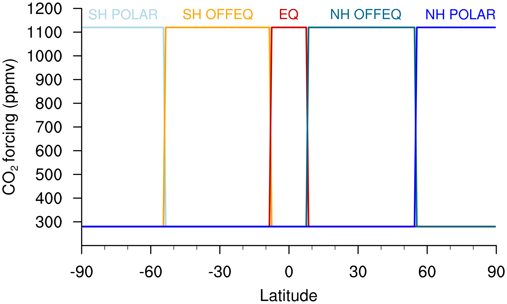
图 1. 区域 CO₂ 增至四倍（4xCO₂）强迫纬度带试验的设置。
Figure 1. Setup of the regional 4xCO₂ forcing‐band experiments.
2.2. 平板海洋模式2.2. Slab Ocean Model
为区分由大气驱动的受迫气候响应与受三维动力海洋调制的受迫气候响应，我们还以平板海洋模式配置（SOM）运行 MPI‐ESM1.2‐LR，其混合层深度为 57 m。
To separate forced climate responses driven by the atmosphere versus modulated by the three‐dimensional dynamical ocean, we also run MPI‐ESM1.2‐LR in a slab ocean model configuration (SOM) with a mixed‐layer depth of 57 m.
在平板海洋模式中，我们规定使用由 DOM 工业化前控制模拟得到的气候态表面热通量和海冰面积占比，以确保 DOM 与 SOM 的平均态海表温度保持相近（补充信息 S1 中的图 S1）。
In the slab ocean model, we prescribe the climatological surface heat flux and sea‐ice area fraction derived from the DOM preindustrial control simulation to ensure that the mean‐state SST remains similar between the DOM and SOM (Figure S1 in Supporting Information S1).
两种配置的全球平均地表温度相近，SOM 为 11.2°C，DOM 为 11.7°C，但仍存在一些区域差异：相对于 DOM，SOM 在赤道太平洋约暖 0.3°C，在某些中纬度地区约冷 0.5°C。
The global‐mean surface temperature is comparable, with 11.2°C in SOM and 11.7°C in DOM, although some regional differences remain: the SOM is about 0.3°C warmer in the equatorial Pacific and roughly 0.5°C colder in some midlatitude regions relative to DOM.
与 DOM 试验类似，我们开展包含 30 个成员的纬度带强迫试验集合，运行 20 年。
Analogous to the DOM experiments, we perform 30‐member ensembles of latitude‐band forcing experiments for 20 years.
GLOBAL 试验将全部 30 个集合成员的模拟延长至 150 年，而纬度带强迫试验仅将第一个集合成员的模拟延长至 150 年。
The GLOBAL experiment is extended to 150 years for all 30‐member ensemble, while only the first ensemble member is extended to 150 years for the latitude‐band forcing experiments.
2.3. 快速和慢速响应的定义2.3. Definition of Fast and Slow Responses
我们将对 CO₂ 强迫的响应计算为各扰动试验（例如，全球和区域 CO₂ 突增至四倍（4xCO₂）的强迫试验）与 600 年工业化前控制试验平均值之差。
We calculate the response to CO₂ forcing as the difference between each perturbation experiment (e.g., global and regional abrupt 4xCO₂ forcing) and the mean of the 600‐year preindustrial control experiment.
快速响应定义为第 1–20 年的平均，长期响应定义为每个 150 年试验中第 101–150 年的平均，而慢速响应定义为长期响应与快速响应之差（即 Yr101–150 减去 Yr1–20）。
The fast response is defined as the average over years 1–20, the long‐term response as the average over years 101–150 of each 150‐year experiment, and the slow response as the difference between the long‐term and fast responses (i.e., Yr101–150 minus Yr1–20).
2.4. 海表温度梯度和沃克环流指数的定义2.4. Definition of SST Gradient and Walker Circulation Index
遵循 Vecchi et al. (2006)，我们将赤道太平洋纬向海表温度梯度计算为印度洋—太平洋暖池海表温度（WEP；5°N–5°S 和 80°E–160°E）与赤道太平洋中东部海表温度（CEP；5°N–5°S 和 160°E–80°W）之差。
Following Vecchi et al. (2006), we calculate the zonal equatorial Pacific SST gradient as the difference between the Indo‐Pacific warm pool SST (WEP; 5°N–5°S and 80°E–160°E) and the central‐to‐eastern equatorial Pacific SST (CEP; 5°N–5°S and 160°E–80°W).
选择这两个广阔区域，是因为它们之间的海表温度梯度与热带大尺度环流特征紧密相关，包括沃克环流和信风东风。
These two broad regions are chosen because their SST gradient is closely tied to tropical large‐scale circulation features, including the Walker circulation and the trade easterlies.
沃克环流强度计算为东部赤道太平洋（EEP，5°N–5°S，120°W–80°W）与印度洋—太平洋增暖池（WEP，5°N–5°S，80°E–160°E）之间的海平面气压差。
The Walker circulation strength is calculated as the sea level pressure difference between the eastern equatorial Pacific (EEP, 5°N–5°S, 120°W–80°W) and the Indo‐Pacific warming pool (WEP, 5°N–5°S, 80°E–160°E).
补充信息：Supporting Information:
补充信息可在本文的在线版本中找到。
Supporting Information may be found in the online version of this article.
通信作者：Correspondence to:
通信作者：S. M. Kang，sarah.kang@mpimet.mpg.de
S. M. Kang, sarah.kang@mpimet.mpg.de
引用格式：Citation:
Olonscheck, D., & Kang, S. M.（2026）。由海洋动力过程和远程强迫主导的 CO₂ 驱动赤道太平洋增暖型态的阶段转变。AGU Advances，7，e2026AV002437。https://doi.org/10.1029/2026AV002437
Olonscheck, D., & Kang, S. M. (2026). Phase transition of CO₂‐driven equatorial Pacific warming pattern governed by ocean dynamics and remote forcing. AGU Advances, 7, e2026AV002437. https://doi.org/10.1029/2026AV002437
论文日期Article dates
收稿：23 MAR 2026；接受：20 AUG 2026
Received 23 MAR 2026 Accepted 20 AUG 2026
作者贡献Author Contributions
研究构思：Sarah M. Kang
Conceptualization: Sarah M. Kang
正式分析：Dirk Olonscheck
Formal analysis: Dirk Olonscheck
研究实施：Dirk Olonscheck
Investigation: Dirk Olonscheck
方法设计：Dirk Olonscheck, Sarah M. Kang
Methodology: Dirk Olonscheck, Sarah M. Kang
项目管理：Sarah M. Kang
Project administration: Sarah M. Kang
研究指导：Sarah M. Kang
Supervision: Sarah M. Kang
可视化：Dirk Olonscheck
Visualization: Dirk Olonscheck
写作——初稿：Dirk Olonscheck
Writing – original draft: Dirk Olonscheck
写作——审阅与编辑：Dirk Olonscheck, Sarah M. Kang
Writing – review & editing: Dirk Olonscheck, Sarah M. Kang
版权与许可Copyright and License
© 2026 作者。
© 2026 The Author(s).
AGU Advances 由 Wiley Periodicals LLC 代表美国地球物理联合会出版。
AGU Advances published by Wiley Periodicals LLC on behalf of American Geophysical Union.
本文是一篇依据知识共享署名许可条款发布的开放获取文章；该许可允许在任何媒介中使用、传播和复制本文，前提是恰当地引用原作。
This is an open access article under the terms of the Creative Commons Attribution License, which permits use, distribution and reproduction in any medium, provided the original work is properly cited.
3. 结果3. Results
3.1. 海洋动力过程是两阶段转变的关键3.1. Ocean Dynamics Key to the Two‐Phase Transition
我们首先辨识赤道太平洋海表温度对全球均匀、突增至四倍的 CO2 强迫（GLOBAL）的两阶段响应演变（图2）。
We begin by identifying the two‐phase evolution of the equatorial Pacific SST response to globally uniform abrupt 4xCO2 forcing (GLOBAL) (Figure 2).
在 DOM 中，赤道太平洋中东部的海表温度在前20年迅速升高，随后增暖更加缓慢，并在150年后接近 +3.9°C 的准平衡状态。
In DOM, the central‐to‐eastern equatorial Pacific SST increases rapidly over the first 20 years, followed by more gradual warming that approaches a quasi‐equilibrium of +3.9°C after 150 years.
在 SOM 中，最终达到类似的 +4.0°C 平衡增暖，但增暖呈阶跃式，几乎全部发生在最初十年内，此后基本保持不变（图2a）。
In SOM, a similar equilibrium warming of +4.0°C is reached, but the warming occurs in a step‐like manner, taking place almost entirely within the first decade and remaining largely unchanged thereafter (Figure 2a).
两种模式配置中，赤道太平洋增暖型态的演变也存在显著差异（图2b）。
The evolution of the equatorial Pacific warming pattern also differs markedly between the two configurations (Figure 2b).
在 DOM 中，纬向海表温度梯度最初在前20年增强，随后转为长期减弱（Heede & Fedorov, 2021; Heede et al., 2020）。
In DOM, the zonal SST gradient initially strengthens during the first 20 years, then reverses to a long‐term weakening (Heede & Fedorov, 2021; Heede et al., 2020).
快速响应的特征是北半球陆地和北极出现强烈的地表增暖，而海洋表面增暖总体较弱，其中包括南大洋和东南太平洋较为微弱的增暖（图3a）。
The fast response is characterized by strong surface warming over NH land and the Arctic, along with generally weaker ocean surface warming, including muted warming over the Southern Ocean and the southeast Pacific (Figure 3a).
东南太平洋的相对冷却延伸至赤道太平洋中东部，导致赤道太平洋纬向海表温度梯度最初增强（图4a中的黑色柱）。
Relative cooling in the southeast Pacific extends to the central‐to‐eastern equatorial Pacific, leading to an initial strengthening of the zonal SST gradient in the equatorial Pacific (black bars in Figure 4a).
相比之下，在慢速响应中，增暖在赤道太平洋中东部达到峰值（图3a），表明纬向海表温度梯度减小（图4a）。
In the slow response, by contrast, warming peaks in the central‐to‐eastern equatorial Pacific (Figure 3a), indicative of a reduced zonal SST gradient (Figure 4a).
反之，SOM 中的纬向海表温度梯度立即且持续减弱（图2b、4b和5a）。
Conversely, SOM exhibits an immediate and steady weakening of the zonal SST gradient (Figures 2b, 4b, and 5a).
沃克环流强度的变化与纬向海表温度梯度的时间演变高度对应（图2c；支持信息 S1 中的图S2）。
The temporal evolution of the zonal SST gradient is closely mirrored by changes in the Walker circulation strength (Figure 2c; Figure S2 in Supporting Information S1).
在 DOM 中，沃克环流在最初二十年先增强，随后在长期内减弱；而在 SOM 中，它在整个模拟期间轻微但持续地减弱。
In DOM, the Walker circulation initially strengthens during the first two decades before weakening over the long‐term, whereas in SOM it slightly but steadily weakens throughout the simulation.
然而，尽管 DOM 中的纬向海表温度梯度减小幅度较小（图2b），其沃克环流的长期减弱幅度却大于 SOM（图2c）。
However, the long‐term Walker circulation weakening in DOM is larger than in SOM (Figure 2c), despite a weaker reduction in zonal SST gradient (Figure 2b).
这很可能反映了以下事实：沃克环流响应受到海表温度型态中某些特征的影响，而两个赤道矩形区域之间的纬向海表温度梯度并不能反映这些特征。
This likely reflects the fact that the Walker circulation response is influenced by aspects of the SST pattern that are not captured by the zonal SST gradient between the two equatorial boxes.
具体而言，在 DOM 中，随着赤道太平洋各处逐渐出现增暖峰值，东南太平洋的增暖最小值区不再随时间推移而延伸至赤道太平洋中部（支持信息 S1 中的图S3b）。
In particular, in DOM, the Southeast Pacific warming minimum no longer extends into the central equatorial Pacific over time, as peak warming develops across the equatorial Pacific (Figure S3b in Supporting Information S1).
因此，赤道太平洋中部与之相关的异常高压的影响减小，使 DOM 中纬向海平面气压梯度的减弱比 SOM 中更明显（支持信息 S1 中的图S3b和S3d）。
Consequently, the influence of associated anomalous high over the central equatorial Pacific is reduced, allowing the zonal SLP gradient to weaken more clearly in DOM than in SOM (Figures S3b and S3d in Supporting Information S1).
DOM 与 SOM 的比较突出了海洋动力过程在驱动赤道太平洋增暖型态两阶段转变中的关键作用。
A comparison between DOM and SOM highlights the critical role of ocean dynamics in driving the two‐phase transition of the equatorial Pacific warming pattern.
具体而言，图4c量化了海洋动力过程在塑造快速响应及其后续慢速转变时的综合净效应。
In particular, Figure 4c quantifies the integrated net effect of ocean dynamics in shaping both the fast response and the subsequent slow transition.
虽然海洋动力过程已被认为是热带太平洋增暖型态形成的关键（Xie et al., 2010），但我们的结果表明，两阶段转变从根本上也受海洋动力过程支配。
While ocean dynamics have been identified as key to the formation of the tropical Pacific warming pattern (Xie et al., 2010), our results demonstrate that the two‐phase transition is also fundamentally governed by ocean dynamics.
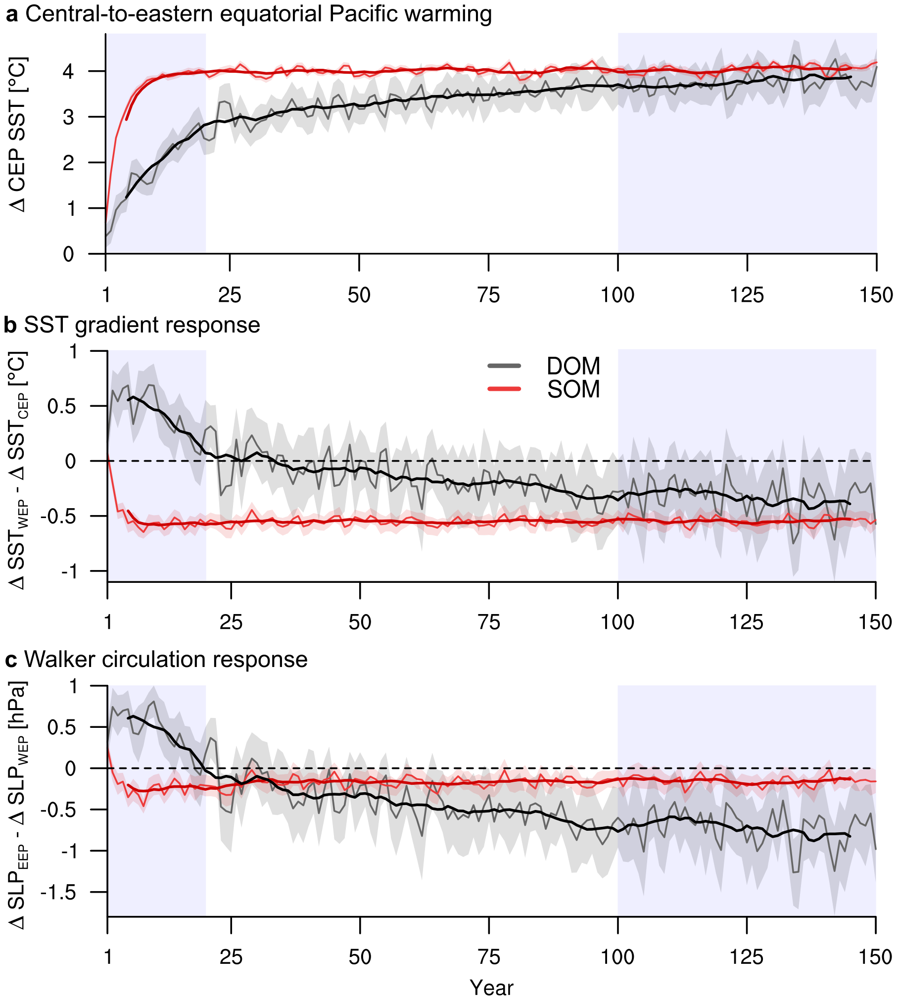
图2。
Figure 2.
热带太平洋海表温度型态和沃克环流强度对全球突增至四倍的 CO2 辐射强迫的响应演变。
Evolution of the tropical Pacific SST pattern and Walker circulation strength to global abrupt 4xCO2 radiative forcing.
DOM（黑色）和 SOM（红色）中 GLOBAL 实验的响应：(a) 赤道太平洋中东部海表温度，(b) 赤道太平洋东西向海表温度梯度，以及 (c) 沃克环流强度（见第2节）。
Response in (a) central‐to‐eastern equatorial Pacific SST, (b) the east‐west equatorial Pacific SST gradient and (c) the Walker circulation strength (see Section 2) for GLOBAL in DOM (black) and SOM (red).
细线表示代表受迫响应的逐年平均集合均值，粗线表示相应的10年滑动平均。
Thin lines represent the annual averaged ensemble mean representing the forced response, thick lines the corresponding 10‐year running averages.
灰色和红色阴影表示95%置信区间。
Gray and red shadings mark the 95% confidence interval.
蓝色阴影标示快速响应（Yr1–20；左）和长期响应（Yr101–150；右）的时段。
Blue shading marks the periods of the fast (Yr1–20; left) and long‐term response (Yr101–150; right).
(a和b) 中使用的赤道太平洋中东部与西部区域在图3中以绿色矩形框表示。
The central‐to‐eastern and western equatorial Pacific regions used in (a and b) are shown as green boxes in Figure 3.
基于 DOM 中纬向海表温度梯度变化和沃克环流强度变化的符号明显反转，我们将快速响应定义为第1–20年平均的集合平均响应，将慢速响应定义为长期响应（第101–150年）与快速响应之差。
Based on the clear reversal in the sign of zonal SST gradient and Walker circulation strength changes in DOM, we define the fast response as the ensemble‐mean response averaged over Years 1–20, and the slow response as the difference between the long‐term response (Years 101–150) and the fast response.
利用我们的大集合，我们采用指标 N_min = 4/(X/σ) 来估算在95%显著性水平下辨识受迫响应符号所需的最少集合成员数，其中 X 为集合平均响应，σ 为30个成员之间的标准差（Deser et al., 2012）。
Using our large ensemble, we estimate the minimum number of ensemble members needed to identify the sign of the forced response at the 95% significance level using the metric N_min = 4/(X/σ), where X is the ensemble mean response and σ is the standard deviation across the 30 members (Deser et al., 2012).
查看源公式排版
以下为同一句源公式的 MathML 排版显示，不改写原文表达。
对于快速响应期间增强的纬向海表温度梯度，Nmin 为10；而对于慢速响应期间的减弱，所需数量增加至31。
For the intensified zonal SST gradients during the fast response, Nmin is 10, while for the weakening during the slow response, it increases to 31.
快速响应的 Nmin 较低，很可能反映了强烈的突增 CO2 强迫带来的更高信噪比。
The lower Nmin for the fast response likely reflects the strong abrupt CO2 forcing, which yields a higher signal‐to‐noise ratio.
因此，我们的30成员集合足以稳健地捕捉赤道太平洋增暖型态的两阶段转变。
Our 30‐member ensemble is therefore sufficient to robustly capture the two‐phase transition in the equatorial Pacific warming pattern.
值得注意的是，所有区域强迫实验响应之和通常能够很好地再现 DOM 中纬向海表温度梯度的快速和慢速响应（图4a中的黑色和灰色柱以及支持信息 S1 中的图S4），支持了将 GLOBAL 响应分解为区域 CO2 强迫贡献的有效性。
Notably, the fast and slow responses in the zonal SST gradient in DOM are generally well reproduced by the sum of all regional forcing experiments (black and gray bars in Figure 4a and Figure S4 in Supporting Information S1), supporting the validity of decomposing the GLOBAL response into contributions from regional CO2 forcing.
为进一步研究其背后的机制，我们现在转向区域 CO2 强迫实验。
To further investigate the underlying mechanisms, we now turn to the regional CO2 forcing experiments.
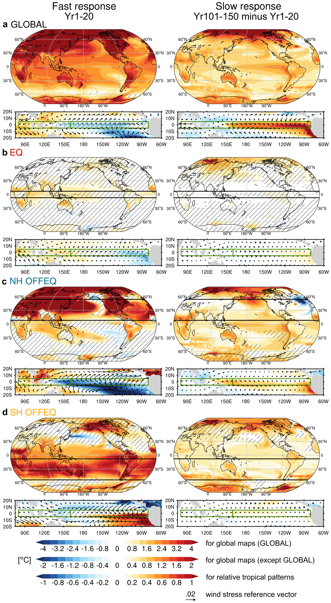
图3。
Figure 3.
DOM 中全球地表气温响应，以及热带太平洋表面风应力和相对海表温度响应。
Global surface air temperature response, and tropical Pacific surface wind stress and relative SST response in DOM.
DOM 中 (a) GLOBAL、(b) EQ、(c) NH OFFEQ 和 (d) SH OFFEQ 的快速响应（Yr1–20，左列）和慢速响应（(Yr101–150)–(Yr1–20)，右列）：地表气温变化（全球地图中的阴影），以及在75°E–60°W和20°S–20°N范围内，相对于热带太平洋平均值（80°W–80°E和30°S–30°N）的海表温度变化（热带地图中的阴影）和海洋风应力变化（箭头）。
Changes in surface air temperature (shading in global maps), SST relative to the tropical Pacific mean (80°W–80°E and 30°S–30°N, shading in tropical maps) and ocean wind stress (arrows), within the domain 75°E–60°W and 20°S–20°N, for the fast response (Yr1–20, left column) and the slow response ((Yr101–150)–(Yr1–20), right column) in (a) GLOBAL, (b) EQ, (c) NH OFFEQ, and (d) SH OFFEQ in DOM.
斜线阴影标示在第90百分位水平上不显著的响应。
Hatching marks insignificant responses at the 90th percentile level.
绿色矩形框标示用于计算纬向海表温度梯度的赤道太平洋西部（WEP，5°N–5°S和80°E–160°E）及中东部（CEP，5°N–5°S和160°E–80°W）。
Green boxes mark the western (WEP, 5°N–5°S and 80°E–160°E) and central‐to‐eastern equatorial Pacific (CEP, 5°N–5°S and 160°E–80°W) used for calculating the zonal SST gradient.
3.2. EQ 和 NH OFFEQ 引起的两阶段转变3.2. Two‐Phase Transition Due To EQ and NH OFFEQ
GLOBAL DOM 中纬向海表温度梯度的初始增强来自 EQ 和 NH OFFEQ 的共同作用，并被 SH OFFEQ 部分抵消（图4a）。
The initially enhanced zonal SST gradient in GLOBAL DOM results from the combined effects of EQ and NH OFFEQ, partially offset by SH OFFEQ (Figure 4a).
POLAR DOM 实验对热带太平洋海表温度响应型态的影响有限（图4a和支持信息 S1 中的图S5），因此不再进一步讨论。
The POLAR DOM experiments exert only a limited influence on the tropical Pacific SST response pattern (Figure 4a and Figure S5 in Supporting Information S1) and are therefore not discussed further.
在局地赤道 CO2 强迫（EQ）下，赤道太平洋中东部在快速响应中出现海表温度相对冷却，而在慢速响应中转为相对增暖（图3b和图4a中的红色柱）。
In response to local equatorial CO2 forcing (EQ), the central‐to‐eastern equatorial Pacific exhibits relative SST cooling in the fast response, which transitions to relative warming in the slow response (Figure 3b and red bars in Figure 4a).
这一行为与经典海洋动力恒温器机制大体一致（Clement et al., 1996; Y. Luo et al., 2017）：赤道 CO2 强迫增强局地海洋层结（即 ∂ΔT/∂z > 0），使气候态上升流产生表面冷却趋势（即 −w̄∂ΔT/∂z < 0）。
This behavior is broadly consistent with the classical ocean dynamical thermostat mechanism (Clement et al., 1996; Y. Luo et al., 2017), whereby equatorial CO2 forcing enhances local ocean stratification (i.e., ∂ΔT/∂z > 0) such that climatological upwelling induces surface cooling tendency (i.e., −w̄∂ΔT/∂z < 0).
查看源公式排版
以下为同一句源公式的 MathML 排版显示，不改写原文表达。
然而，实际上层结变化较小，这与赤道 CO2 强迫下较为微弱的海表温度增暖（图3b）相一致；后者是由负云反馈（Kang & Xie, 2014）和哈德莱环流增强所伴随的上升流增强（图6；Stuecker et al., 2020）造成的。
In practice, however, the stratification change is small, consistent with muted SST warming under equatorial CO2 forcing (Figure 3b) due to negative cloud feedbacks (Kang & Xie, 2014) and enhanced upwelling associated with a strengthened Hadley circulation (Figure 6; Stuecker et al., 2020).
相反，正是这一副热带环流单元的增强导致赤道太平洋东部冷却以及纬向海表温度梯度增强。
Instead, it is this strengthening of the subtropical cell that leads to cooling in the eastern equatorial Pacific and to a strengthening of the zonal SST gradient.
快速响应中由赤道上升流增强所造成的纬向海表温度梯度增强，在慢速响应中转为梯度减小（图4a），因为暖的副热带海水潜沉使次表层海洋温度升高（图6；Capotondi et al., 2023）。
The strengthened zonal SST gradient caused by enhanced equatorial upwelling in the fast response transitions to a reduced gradient in the slow response (Figure 4a) because subsurface ocean temperatures increase due to the subduction of warm subtropical waters (Figure 6; Capotondi et al., 2023).
由于 SOM 中不存在这些海洋动力调整，EQ SOM 中的赤道太平洋中东部反而在快速响应中出现相对增暖（图5b），导致纬向海表温度梯度最初减小，并在整个模拟期间持续如此（图4b中的红色柱）。
As these ocean dynamical adjustments are absent in SOM, the central‐to‐eastern equatorial Pacific instead shows relative warming in the fast response in EQ SOM (Figure 5b), leading to an initial decrease in the zonal SST gradient that persists throughout the simulation (red bars in Figure 4b).
EQ DOM 与 SOM 之间的这一鲜明差异凸显了海洋动力过程的关键作用：在局地 CO2 强迫下，它使纬向海表温度梯度最初增强，并随后转为减弱（图4c和5b）。
This stark contrast between EQ DOM and SOM highlights the key role of ocean dynamics in producing the initial strengthening and the transition to a weakening of the zonal SST gradient in response to local CO2 forcing (Figures 4c and 5b).
另一个驱动两阶段转变的强迫是 NH OFFEQ（图4a中的蓝色柱）。
Another forcing that drives a two‐phase transition is NH OFFEQ (blue bars in Figure 4a).
最初，赤道太平洋的绝对增暖较弱，因为位于赤道以北的气候态热带辐合带（ITCZ）阻碍了北半球增暖信号进入赤道太平洋（图3c；见 Kang et al., 2020）。
Initially, the absolute warming in the equatorial Pacific is muted because the climatological ITCZ, located north of the equator, inhibits the Northern Hemisphere warming signal from penetrating into the equatorial Pacific (Figure 3c; see Kang et al., 2020).
因此，相对于热带平均值的海表温度响应显示，赤道太平洋中东部存在强烈的相对冷却。
As a result, the SST response relative to the tropical mean reveals strong relative cooling in the central‐to‐eastern equatorial Pacific.
在 NH OFFEQ 下，哈德莱环流向北移动（图6），使能量能够向南跨越赤道，输送至能量相对亏缺的半球（支持信息 S1 中的图S6；Kang et al., 2008）。
In response to NH OFFEQ, the Hadley circulation shifts northward (Figure 6), enabling southward cross‐equatorial energy transport toward the hemisphere with a relative energy deficit (Figure S6 in Supporting Information S1; Kang et al., 2008).
赤道太平洋的跨赤道偏南风也体现了哈德莱环流的北移（图3c和5c）。
The northward Hadley cell shift is also evident from the cross‐equatorial southerlies in the equatorial Pacific (Figures 3c and 5c).
因此，偏东信风增强，通过风–蒸发–海表温度（WES）反馈增强蒸发，进而导致赤道太平洋中部表面冷却（支持信息 S1 中的图S7a）。
As a result, the easterly trade winds intensify, leading to enhanced evaporation and consequent surface cooling in the central equatorial Pacific via the wind‐evaporation‐SST (WES) feedback (Figure S7a in Supporting Information S1).
由此产生的海表温度冷却抑制了西太平洋的深对流，产生正的短波云辐射效应，进一步增强纬向海表温度梯度（支持信息 S1 中的图S7b）。
The resulting SST cooling suppresses deep convection in the western Pacific, leading to positive shortwave cloud radiative effects that further enhance the zonal SST gradient (Figure S7b in Supporting Information S1).
WES 反馈与云–海表温度反馈共同构成正反馈回路，产生源于东南太平洋并延伸至赤道太平洋中部的强烈冷却（图3c和5c），这与 Kang et al. (2020) 和 Hsiao et al. (2022) 一致。
Together, the WES and cloud‐SST feedbacks form a positive feedback loop, producing strong cooling that originates in the southeast Pacific and extends into the central equatorial Pacific (Figures 3c and 5c), consistent with Kang et al. (2020) and Hsiao et al. (2022).
与 SOM 相比，这些涉及哈德莱环流移动的大气过程在 DOM 中受到削弱，因为海洋环流参与了跨赤道能量输送，减小了哈德莱环流的补偿作用，进而削弱了相关的偏东风响应（图6、支持信息 S1 中的图S6；Green & Marshall, 2017; Kang et al., 2018）。
These atmospheric processes involving the Hadley cell shift are damped in DOM compared to SOM because ocean circulation contributes to cross‐equatorial energy transport, reducing the compensating role of the Hadley circulation and thereby weakening the associated easterly response (Figure 6, Figure S6 in Supporting Information S1; Green & Marshall, 2017; Kang et al., 2018).
因此，海洋动力过程削弱了赤道太平洋中东部的冷却（图4c和5c），NH OFFEQ 快速响应中纬向海表温度梯度的增强在 DOM 中比 SOM 中更弱（图4a和4b中的蓝色柱）。
Hence, the ocean dynamics damp the central‐to‐eastern equatorial Pacific cooling (Figures 4c and 5c), and the enhancement of the zonal SST gradient in the fast response to NH OFFEQ is weaker in DOM than in SOM (blue bars in Figures 4a and 4b).
在慢速响应中，北半球副热带环流单元减弱（图6），原因是 NH OFFEQ 强迫下较弱的经向温度梯度使副热带风应力减小（图3c；Hwang et al., 2024）。
In the slow response, the northern subtropical cell weakens (Figure 6) due to reduced subtropical wind stress, associated with a weaker meridional temperature gradient under NH OFFEQ forcing (Figure 3c; Hwang et al., 2024).
与此同时，赤道太平洋次表层增暖与表面脱离，表明热力效应并非表面增暖所必需（图6）。
Meanwhile, subsurface warming in the equatorial Pacific is disconnected from the surface, indicating that thermodynamical effects are not essential for the surface warming (Figure 6).
因此，副热带环流单元（STC）减弱等海洋环流变化造成了 NH OFFEQ 慢速响应中的赤道太平洋中东部增暖（图5c），进而减小纬向海表温度梯度（图4a中的蓝色柱）。
Hence, ocean circulation changes such as the weakening of the STC are responsible for the central‐to‐eastern equatorial Pacific warming in the slow response to NH OFFEQ (Figure 5c), thereby reducing the zonal SST gradient (blue bars in Figure 4a).
总体而言，快速响应中的纬向海表温度梯度增强主要由与哈德莱环流北移相关的大气过程驱动，而慢速响应中向减弱的转变则受海洋调整支配。
Overall, the zonal SST gradient strengthening in the fast response is primarily driven by atmospheric processes linked to the northward Hadley cell shift, whereas the transition to weakening in the slow response is governed by oceanic adjustments.
EQ 与 NH OFFEQ 驱动两阶段转变的机制存在根本差异。
The mechanisms driving the two‐phase transition differ fundamentally between EQ and NH OFFEQ.
虽然海洋恒温器机制常被视为全球 CO2 强迫下阶段转变的主要驱动因素，但我们的区域强迫实验突出了 EQ 响应中海洋环流变化的重要性，并揭示了 NH OFFEQ 响应中与哈德莱环流移动相关的另一种不同机制。
While the ocean thermostat mechanism is often considered the primary driver of the phase transition in response to global CO2 forcing, our regional forcing experiments highlight the importance of ocean circulation changes in response to EQ and reveal an additional, distinct mechanism associated with the Hadley cell shift in response to NH OFFEQ.
在驱动转变方面，NH OFFEQ 的这一远程影响与局地 EQ 强迫的作用相当（图4a中的红色和蓝色柱）。
This remote impact from NH OFFEQ plays a role comparable to that of local EQ forcing in driving the transition (red and blue bars in Figure 4a).
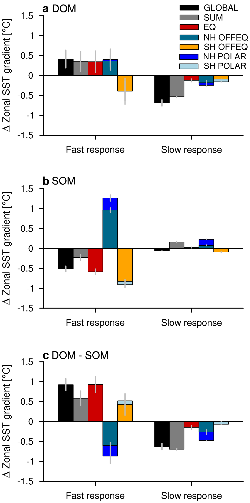
图4。
Figure 4.
区域辐射强迫对 GLOBAL 中热带太平洋纬向海表温度梯度响应的贡献。
Contribution of regional radiative forcing to the tropical Pacific zonal SST gradient response in GLOBAL.
(a) DOM、(b) SOM（代表大气过程）以及 (c) DOM 与 SOM 之差（代表动力海洋贡献）中，快速响应（Yr1–20）和慢速响应（Yr101–150–Yr1–20）的热带太平洋纬向海表温度梯度变化。
Changes in the tropical Pacific SST zonal gradient in the fast (Yr1–20) and slow response (Yr101–150–Yr1–20) in (a) DOM, (b) SOM (representing the atmospheric processes), and (c) the difference between DOM and SOM (representing the dynamical ocean contribution).
正值对应海表温度梯度增强，负值对应海表温度梯度减弱。
Positive values correspond to SST gradient strengthening, negative values to SST gradient weakening.
灰色竖线表示95%置信水平。
Gray vertical lines show the 95% confidence level.
3.3. SH OFFEQ 导致的持续性纬向海表温度梯度减弱3.3. Persistent Zonal SST Gradient Weakening From SH OFFEQ
虽然 EQ 和 NH OFFEQ 强迫驱动赤道太平洋海表温度型态的两阶段转变，但 SH OFFEQ 强迫使纬向海表温度梯度持续减小（图4a中的橙色柱）。
While EQ and NH OFFEQ forcings drive a two‐phase transition in the equatorial Pacific SST pattern, the SH OFFEQ forcing induces a persistently reduced zonal SST gradient (orange bars in Figure 4a).
在 SH OFFEQ 下，哈德莱环流向南移动（支持信息 S1 中的图S8），削弱偏东信风，并促进赤道太平洋中东部增暖（图3d）。
In response to SH OFFEQ, the Hadley circulation shifts southward (Figure S8 in Supporting Information S1), weakening the trade easterlies and promoting warming in the central‐to‐eastern equatorial Pacific (Figure 3d).
由于气候态热带辐合带位于赤道以北，南半球赤道外区域的增暖信号延伸至赤道太平洋（Kang et al., 2020; Tseng & Hwang, 2024），并沿南半球副热带气候态东南风优先进入海盆东部（Kim et al., 2022），从而减小纬向海表温度梯度。
Because the climatological ITCZ lies north of the equator, the warming signal from the Southern Hemisphere off‐equatorial region extends into the equatorial Pacific (Kang et al., 2020; Tseng & Hwang, 2024), preferentially in the eastern basin following the climatological southeasterlies in the southern subtropics (Kim et al., 2022), resulting in a reduction of the zonal SST gradient.
与 NH OFFEQ 情形一样，这些快速大气过程受到海洋动力过程的削弱（图5d），使 DOM 中纬向梯度的减弱幅度小于 SOM（图4a和4b中的橙色柱）。
As in NH OFFEQ case, these fast atmospheric processes are damped by ocean dynamics (Figure 5d), leading to a smaller weakening of the zonal gradient in DOM compared to SOM (orange bars in Figures 4a and 4b).
SH OFFEQ 的响应在整个模拟期间持续存在，慢速调整可忽略不计，且没有转变行为的证据，这与 Tseng and Hwang (2024) 一致（图3d和5d）。
The response to SH OFFEQ remains persistent throughout the simulation, exhibiting negligible slow adjustment and no evidence of transitional behavior, consistent with Tseng and Hwang (2024) (Figures 3d and 5d).
值得注意的是，尽管海表温度型态的演变主要由 NH OFFEQ 塑造，但赤道增暖的幅度在很大程度上由 SH OFFEQ 驱动（图3c和3d）。
It is worth noting that while the evolution of the SST pattern is primarily shaped by NH OFFEQ, the amplitude of equatorial warming is largely driven by SH OFFEQ (Figures 3c and 3d).
在快速响应中，SH OFFEQ 强迫下的赤道增暖为 NH OFFEQ 强迫下的2.37倍；在长期响应中，这一倍数降至1.50（支持信息 S1 中的图S9）。
In the fast response, the equatorial warming is 2.37 times stronger under SH OFFEQ than in NH OFFEQ forcing, decreasing to a factor of 1.50 in the long‐term response (Figure S9 in Supporting Information S1).
这种显著的早期差异源于热带辐合带的阻挡效应（Kang et al., 2020）。
This pronounced early contrast arises from the ITCZ blocking effect (Kang et al., 2020).
Stuecker et al. (2020) 发现，与局地赤道强迫相比，远程赤道外 CO2 强迫能更有效地引起赤道平均海表温度增暖。
Stuecker et al. (2020) found that remote off‐equatorial CO2 forcing is more effective at inducing equatorial‐mean SST warming than local equatorial forcing.
该分析基于半球对称的强迫实验，因此无法区分两个半球各自的相对贡献。
That analysis was based on hemispherically symmetric forcing experiments and thus could not disentangle the relative contributions from each hemisphere.
我们的区域强迫实验表明，在全球 CO2 强迫下驱动赤道增暖起主导作用的是南半球赤道外强迫。
Our regional forcing experiments demonstrate that it is the Southern Hemisphere off‐equatorial forcing that plays the dominant role in driving equatorial warming under global CO2 forcing.
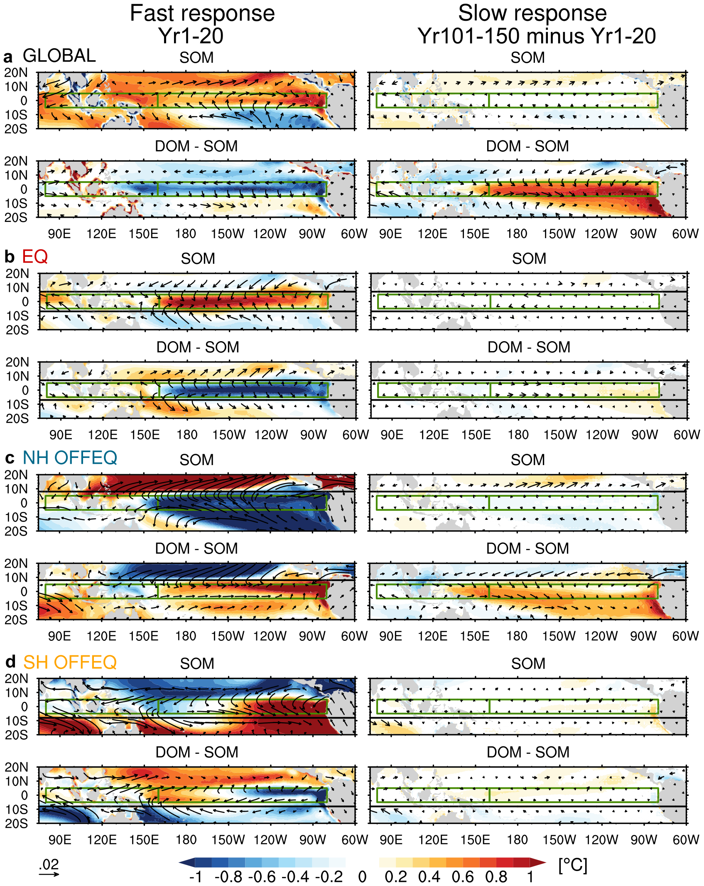
图5。
Figure 5.
大气和动力海洋对突增至四倍的 CO2 强迫下相对海表温度与表面风应力响应的贡献。
Atmosphere and dynamical ocean contributions to the relative SST and surface wind stress response to abrupt 4xCO2 forcing.
(a) GLOBAL、(b) EQ、(c) NH OFFEQ 和 (d) SH OFFEQ 中，在75°E–60°W和20°S–20°N范围内，快速响应（Yr1–20，左列）和慢速响应（(Yr101–150)–(Yr1–20)，右列）中的相对于热带太平洋平均值（80°W–80°E和30°S–30°N；阴影）的海表温度变化，以及表面风应力响应（箭头）。
Changes in SST relative to the tropical Pacific mean (80°W–80°E and 30°S–30°N; shading) and surface wind stress response (arrows), within the domain 75°E–60°W and 20°S–20°N, for the fast response (Yr1–20, left column) and the slow response ((Yr101–150)–(Yr1–20), right column) in (a) GLOBAL, (b) EQ, (c) NH OFFEQ, and (d) SH OFFEQ.
大气贡献由平板海洋模式（SOM）表示，而受动力海洋调制的贡献由 DOM 与 SOM 之差表示。
The atmospheric contribution is represented by the slab ocean model (SOM) and the contribution modulated by the dynamical ocean by the difference between DOM and SOM.
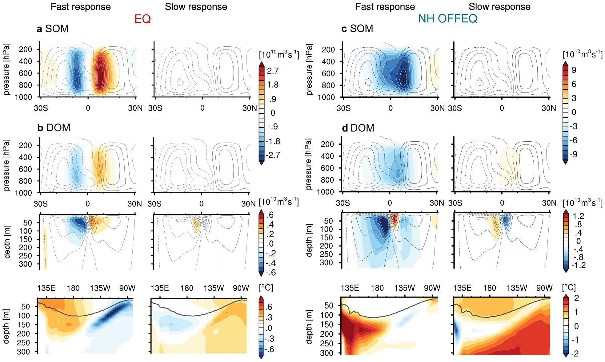
图6。
Figure 6.
大气和海洋环流及温度对 (a, b) EQ 和 (c, d) NH OFFEQ 强迫的响应。
Atmospheric and oceanic circulation and temperature response to (a, b) EQ, and (c, d) NH OFFEQ forcing.
(a) EQ SOM、(b) EQ DOM、(c) NH OFFEQ SOM 和 (d) NH OFFEQ DOM 中哈德莱环流流函数的气候态平均状态（顺时针为实线，逆时针为虚线，等值线间隔 = 10¹⁰ m³ s⁻¹）及受迫响应（阴影）（最上方两行）。
Climatological mean state (clockwise in solid, anticlockwise in dashed, contour interval = 10¹⁰ m³ s⁻¹) and forced response (shading) of the Hadley circulation streamfunction in (a) EQ SOM, (b) EQ DOM, (c) NH OFFEQ SOM, and (d) NH OFFEQ DOM (top two rows).
印度洋–太平洋经向翻转环流的气候态（顺时针为灰色实线，逆时针为灰色虚线，等值线间隔 = 10¹⁰ m³ s⁻¹）及其受迫响应（阴影）（第3行）。
The Indo‐Pacific meridional overturning circulation climatology (clockwise in gray solid, anticlockwise in gray dashed, contour interval = 10¹⁰ m³ s⁻¹) and its forced response (shading) (3rd row).
5°S–5°N平均的海洋温度响应经度–深度剖面（阴影），以及气候态平均温跃层深度（黑色实线）（第4行）。
Longitude‐depth profiles of the ocean temperature response averaged over 5°S–5°N (shading), along with the climatological mean thermocline depth (black solid) (4th row).
快速响应（Yr1–20，各组左列）和慢速响应（Yr101–150–Yr1–20，各组右列）。
Fast response (Yr1–20, left column each) and slow response (Yr101–150–Yr1–20, right column each).
4. 讨论4. Discussion
我们辨识出，全球 CO2 突增至四倍时赤道太平洋增暖型态存在稳健的两阶段转变：纬向海表温度梯度先增强，再逐渐减弱，这与此前研究一致（Heede & Fedorov, 2021; Heede et al., 2020; K. Lu et al., 2021）。
We identify a robust two‐phase transition in the equatorial Pacific warming pattern in response to an abrupt quadrupling of global CO2: an initial strengthening of the zonal SST gradient followed by a gradual weakening, consistent with earlier studies (Heede & Fedorov, 2021; Heede et al., 2020; K. Lu et al., 2021).
这一转变通常归因于海洋动力恒温器机制，即赤道太平洋东部的气候态上升流引起表面冷却。
This transition is commonly attributed to the ocean dynamical thermostat, whereby climatological upwelling in the eastern equatorial Pacific induces surface cooling.
然而，通过将 CO2 强迫分解到离散的纬度带，我们表明，要解释快速响应，需要经典海洋动力恒温器机制以外的机制。
However, by decomposing the CO2 forcing into discrete latitudinal bands, we demonstrate that mechanisms beyond the classical ocean dynamical thermostat are required to explain the fast response.
在 EQ 强迫下，与海洋环流变化相关的赤道上升流增强，是驱动赤道太平洋中东部快速冷却的主导机制，从而增强纬向海表温度梯度。
In response to EQ forcing, enhanced equatorial upwelling associated with ocean circulation changes is the dominant mechanism driving the fast cooling in the central‐to‐eastern equatorial Pacific, thereby strengthening the zonal SST gradient.
这种对海洋环流变化塑造快速响应的强调，与 Q. Li et al. (2024) 的研究一致；他们采用部分耦合实验，明确分离了热力强迫分量和动力诱导分量。
This emphasis on ocean circulation changes shaping the fast response is consistent with Q. Li et al. (2024) who used partially coupled experiments to cleanly separate the thermally forced component and the dynamically induced component.
我们进一步揭示了另一种驱动纬向海表温度梯度初始增强的机制：NH OFFEQ 强迫引起哈德莱环流北移，随后通过 WES 和云–海表温度反馈使赤道太平洋中东部冷却。
We further reveal an additional mechanism driving the initial enhancement of the zonal SST gradient, involving a northward Hadley cell shift and subsequent cooling in the central‐to‐eastern equatorial Pacific through the WES and cloud‐SST feedbacks via NH OFFEQ forcing.
综合来看，全球 CO2 强迫的快速响应同时来自海洋驱动的上升流增强和大气驱动的热带辐合带移动。
Taken together, the fast response to global CO2 forcing arises from both ocean‐driven enhanced upwelling and atmosphere‐driven ITCZ shifts.
在慢速响应中，EQ 和 NH OFFEQ 强迫都使纬向海表温度梯度转向减弱，但所通过的机制不同。
In the slow response, both EQ and NH OFFEQ forcings lead to a transition toward a weakened zonal SST gradient, but through distinct mechanisms.
在 EQ 强迫下，慢速转变来自暖副热带海水潜沉引起的次表层增暖；而在 NH OFFEQ 强迫下，它来自副热带环流单元的减弱。
Under EQ forcing, the slow transition results from subsurface warming due to the subduction of warm subtropical waters, whereas under NH OFFEQ forcing it results from a weakened subtropical cell.
相比之下，SH OFFEQ 强迫在整个模拟期间使纬向梯度持续减弱，同时从绝对幅度来看，它对赤道太平洋增暖最为有效。
By contrast, SH OFFEQ forcing induces a persistent weakening of the zonal gradient throughout the simulation, while being the most effective at warming the equatorial Pacific in terms of absolute amplitude.
这些发现基于区域强迫实验；为更有效地分离目标机制，实验采用赤道和赤道外强迫带，而非传统的热带与热带外划分。
These findings are based on regional forcing experiments that employ equatorial and off‐equatorial forcing bands, rather than the conventional tropical and extratropical division, to more effectively isolate the targeted mechanisms.
通过将强迫限制在赤道核心纬度带内，我们确保海洋动力恒温器机制被明确激发，并使所产生的响应能够主要归因于局地海洋动力过程，而不是远程影响。
By confining the forcing to the deep equatorial band, we ensure that the ocean dynamical thermostat is cleanly activated and that the resulting response can be attributed primarily to local ocean dynamics rather than remote influences.
较宽的赤道外纬度带本身并非旨在代表“热带外”强迫，而是要涵盖通过半球能量不平衡和哈德莱环流移动机制影响赤道太平洋的区域。
The broader off‐equatorial band is not intended to represent “extratropical” forcing per se, but rather to encompass regions that influence the equatorial Pacific through hemispheric energy imbalance and Hadley cell‐shift mechanisms.
所选的8°–54°N/S范围遵循了既有研究（例如 Stuecker et al., 2020）。
The chosen range of 8°–54°N/S follows prior studies (e.g., Stuecker et al., 2020).
虽然采用其他配置，例如在30°纬度以内或以外施加强迫，会得到定量上不同的结果，但由于相关机制在连续的纬度范围内起作用，海洋驱动的上升流增强和大气驱动的哈德莱环流移动的定性作用预计仍将稳健。
While alternative configurations, such as applying the forcing within or beyond 30° latitude, would yield quantitatively different results, the qualitative roles of ocean‐driven enhanced upwelling and atmosphere‐driven Hadley cell shifts are expected to remain robust, as the underlying mechanisms operate across a continuum of latitudes.
我们的目标不是量化相对贡献，而是表明经典海洋动力恒温器机制以外的机制能够解释转变行为。
Our goal is not to quantify the relative contributions, but rather to demonstrate that mechanisms beyond the classical ocean dynamical thermostat explain the transitional behavior.
因此，目前的配置是为使机制清晰并使不同实验具有可解释性而优化的。
The present configuration is therefore optimized for mechanistic clarity and interpretability across experiments.
总之，这些发现提示，GLOBAL DOM 中的瞬态演变——从最初增强的纬向海表温度梯度转为减弱——来自区域强迫效应的叠加，转变在我们的模式中约发生于第25年。
In sum, these findings suggest that the transient evolution seen in GLOBAL DOM—the shift from an initially enhanced to a weakened zonal SST gradient—emerges from the superposition of regional forcing effects, with the transition occurring around Year 25 in our model.
Heede and Fedorov. (2021) 和 Heede and Fedorov (2023) 已表明，CO2 强迫下的这种转变行为并非在所有模式中都明显，可能是因为只有一个集合成员可用。
Heede and Fedorov. (2021) and Heede and Fedorov (2023) have shown that this transitional behavior in response to CO2 forcing is not evident in all models, possibly because only a single ensemble member was available.
我们的集合分析表明，要稳健地辨识从快速响应到慢速响应的转变，至少需要10个成员。
Our ensemble analysis indicates that at least 10 members are required to robustly identify the transition from the fast to the slow response.
因此，采用突增至四倍的 CO2 实验的大集合进行多模式比较，将有助于评估这一转变的稳健性，并考察其发生时间如何随模式而变化。
Accordingly, a multi‐model intercomparison using large ensembles of abrupt 4xCO2 experiment would be valuable for assessing the robustness of this transition and for examining how its timing varies across models.
转变时间预期存在的离散性意味着，像既有研究通常所做的那样（例如 Heede & Fedorov, 2021），用固定时间窗口定义快速响应，可能掩盖某些模式中纬向海表温度梯度的初始增强，进而使快速响应看起来只存在于比实际情况更少的一部分模式中。
The expected spread in transition timing implies that defining the fast response using a fixed time window—as commonly adopted in previous studies (e.g., Heede & Fedorov, 2021)—may obscure the initial strengthening of the zonal SST gradient in some models, thereby making the fast response appear in a more limited subset of models than is actually the case.
因此，我们建议以依赖于模式的方式定义快速响应。
We therefore suggest that the fast response be defined in a model‐dependent manner.
此外，我们的区域强迫实验为解释模式间的离散性提供了一个物理框架。
Moreover, our regional forcing experiments provide a physical framework for interpreting the inter‐model spread.
不同模式中区域强迫相对贡献的差异，可能有助于解释为什么有些模式缺乏明显的转变行为。
Differences in the relative contributions of regional forcing across models may help explain why some models lack a clear transitional behavior.
例如，SH OFFEQ 强迫影响相对较强的模式，可能表现出较弱的转变，甚至完全没有转变。
For example, models in which SH OFFEQ forcing exerts a relatively strong influence may exhibit a muted or even absent transition.
我们的结果表明，过去45年观测到的纬向梯度增强可能反映了 CO2 强迫的快速响应，而未来几十年可能出现向类厄尔尼诺型态的转变（支持信息 S1 中的图S10；Watanabe et al., 2024）。
Our results suggest that the observed strengthening of the zonal gradient over the past 45 years may reflect the fast response to CO2 forcing and that a transition toward El Niño‐like pattern could emerge in the coming decades (Figure S10 in Supporting Information S1; Watanabe et al., 2024).
值得注意的是，1979至2024年观测趋势的空间分布与 GLOBAL DOM 中的快速响应十分相似（比较图3a与支持信息 S1 中的图S10）。
Notably, the spatial distribution of observed trends from 1979 to 2024 closely resembles the fast response in GLOBAL DOM (compare Figure 3a and Figure S10 in Supporting Information S1).
那么，为什么耦合历史模拟未能再现观测到的纬向海表温度梯度增强趋势？
Why, then, do coupled historical simulations fail to reproduce the observed trend toward a stronger zonal SST gradient?
我们的区域强迫实验表明，模式可能高估了 SH OFFEQ 响应，同时低估了 NH OFFEQ 响应。
Our regional forcing experiments suggest that models may overestimate the SH OFFEQ response while underestimating the NH OFFEQ response.
后者尤为重要，因为 NH OFFEQ 强迫驱动东南太平洋相对冷却，并延伸至赤道太平洋中部（图3）。
The latter is particularly important because NH OFFEQ forcing drives relative cooling in the southeast Pacific that extends into the central equatorial Pacific (Figure 3).
这表明 NH OFFEQ 强迫对哈德莱环流移动的远程影响可能被低估，其原因可能是模式中的副热带层积云反馈过弱（Kim et al., 2022; Yang et al., 2023）。
This points to a potentially underestimated remote influence of NH OFFEQ forcing on the Hadley cell shift, possibly due to overly weak subtropical stratocumulus cloud feedbacks in models (Kim et al., 2022; Yang et al., 2023).
然而，观测到的历史趋势不仅反映 CO2 强迫，还反映气溶胶强迫、平流层臭氧以及内部变率。
However, the observed historical trend reflects not only CO2 forcing but also aerosol forcing, stratospheric ozone, and internal variability.
因此，应谨慎地将我们的结果直接用于解释模式与观测之间的差异。
Thus, a direct translation of our results to the model‐observation discrepancy should be made with caution.
例如，NH OFFEQ 强迫的突出作用表明，北半球中纬度气溶胶强迫可能具有影响（Hwang et al., 2024）；由于人为气溶胶排放的幅度和时间演变存在不确定性，这种影响可能在模式中被错误表征。
For example, the prominent role of NH OFFEQ forcing points to the potential influence of midlatitude aerosol forcing in the Northern Hemisphere (Hwang et al., 2024), which may be misrepresented in models due to uncertainties in the magnitude and temporal evolution of anthropogenic aerosol emissions.
此外，赤道太平洋东部对 SH OFFEQ 强迫的高度敏感性表明，模式中缺少观测到的南大洋冷却可能导致该区域过度增暖，进一步造成模式与观测之间的差异（Kang et al., 2023）。
In addition, the strong sensitivity of the eastern equatorial Pacific to SH OFFEQ forcing suggests that the absence of observed Southern Ocean cooling in models may lead to excess warming in this region, further contributing to the model‐observation discrepancy (Kang et al., 2023).
观测到的南大洋冷却并非 CO2 强迫的直接响应，而很可能由南极融水排放（Y. Dong et al., 2022）、南大洋多年代际自然变率（L. Zhang et al., 2019）或海洋中尺度涡旋（Kang et al., 2026）驱动——这些过程未在我们的模拟中表示。
The observed Southern Ocean cooling is not a direct response to CO2 forcing, but is instead likely driven by Antarctic meltwater discharge (Y. Dong et al., 2022), Southern Ocean multi‐decadal natural variability (L. Zhang et al., 2019), or mesoscale ocean eddies (Kang et al., 2026)—processes that are not represented in our simulations.
这些非 CO2 驱动因素很可能是产生赤道太平洋中东部所观测到的绝对冷却所必需的（Kang et al., 2023）；因此，我们的分析侧重于纬向海表温度梯度，而非绝对海表温度变化。
These non‐CO2 drivers are likely essential for producing the absolute cooling observed in the central‐to‐eastern equatorial Pacific (Kang et al., 2023); therefore, our analysis focuses on the zonal SST gradient rather than the absolute SST change.
有人可能质疑快速响应对于解释持续45年的观测趋势是否相关，因为这一时长远长于快速调整约20年的时间尺度。
One might question the relevance of the fast response for interpreting an observed trend spanning 45 years, much longer than the ∼20‐year timescale of the fast adjustment.
我们的 CO2 强迫突增实验经过刻意设计，旨在清楚地分离响应中的快速和慢速分量。
Our experiment with an abrupt increase in CO2 forcing is deliberately designed to clearly separate the fast and slow components of the response.
在 CO2 浓度随时间逐渐增加的更现实情景中，任一时刻的气候响应都反映了快速和慢速分量的叠加，各分量按照其特征时间尺度作出贡献。
In more realistic scenarios where CO2 concentrations increase gradually over time, the climate response at any given point reflects a superposition of both fast and slow components, with each contributing according to its characteristic timescale.
因此，快速响应不断出现，并对整体演变作出贡献。
Thus, the fast response continually emerges and contributes to the overall evolution.
例如，在我们的模式中，在 CO2 每年增加1%的实验里，快速响应在大约最初70年占主导（Moreno‐Chamarro et al., 2026; J. Zhang & Kang, 2026），说明快速响应与解释观测趋势相关。
For example, in our model, the fast response dominates for roughly the first 70 years in the 1%‐per‐year CO2 increase experiment (Moreno‐Chamarro et al., 2026; J. Zhang & Kang, 2026), indicating that the fast response is relevant for interpreting observed trends.
十年前，模式与观测之间的这一差异常被归因于内部变率，例如太平洋模态的年代际转变（L. Dong & Zhou, 2014）。
A decade ago, this model‐observation discrepancy was often attributed to internal variability, such as decadal shifts in Pacific modes (L. Dong & Zhou, 2014).
然而，这种差异的持续存在使人们越来越认识到，外部强迫很可能起着重要作用（Byrne et al., 2025; Chung et al., 2024; Watanabe et al., 2024）。
However, its persistence has led to growing recognition that external forcing likely plays a significant role (Byrne et al., 2025; Chung et al., 2024; Watanabe et al., 2024).
提出的驱动因素包括气溶胶强迫（Hwang et al., 2024; Takahashi & Watanabe, 2016）、南大洋冷却（Kang et al., 2023），以及与印度洋（J.‐J. Luo et al., 2012）和大西洋（X. Li et al., 2016; McGregor et al., 2014）之间的跨海盆相互作用。
Proposed drivers include aerosol forcing (Hwang et al., 2024; Takahashi & Watanabe, 2016), Southern Ocean cooling (Kang et al., 2023), and inter‐basin interactions with the Indian (J.‐J. Luo et al., 2012) and Atlantic Oceans (X. Li et al., 2016; McGregor et al., 2014).
我们的发现还表明，观测到的海表温度型态可能反映了 CO2 强迫所引起的快速受迫响应（Heede & Fedorov, 2021）。
Our findings additionally suggest that the observed SST pattern may reflect the fast, forced response to CO2 forcing (Heede & Fedorov, 2021).
重要的是，虽然此前已提出这种联系，但我们的研究提供了一个连贯的框架，将局地和远程 CO2 强迫对热带太平洋所起的不同而互补的作用整合起来。
Importantly, while this connection has been proposed previously, our study provides a coherent framework that integrates the distinct and complementary roles of local versus remote CO2 forcing on the tropical Pacific.
我们提出，对这些机制的错误表征可能是模式与观测之间持续存在差异的根源。
We propose that misrepresentation of these mechanisms may underlie the persistent discrepancy between models and observations.
利益冲突Conflict of Interest
作者声明不存在与本研究相关的利益冲突。
The authors declare no conflicts of interest relevant to this study.
可用性声明Availability Statement
用于生成各图的气候模式输出变量清单和经过后处理的气候模式输出已由马克斯·普朗克气象研究所存档，可从马克斯·普朗克学会的公共资料库 Edmond 获取（Olonscheck, 2025）。
A list of climate model output variables and the post‐processed climate model output used for generating the figures is archived by the Max Planck Institute for Meteorology and can be accessed from Edmond, the public repository of the Max Planck Society (Olonscheck, 2025).
ERA5 再分析资料（Hersbach et al., 2023）可从 https://cds.climate.copernicus.eu/datasets/reanalysis-era5-single-levels?tab=download 下载。
The ERA5 reanalysis (Hersbach et al., 2023) can be downloaded from https://cds.climate.copernicus.eu/datasets/reanalysis-era5-single-levels?tab=download.
代码可用性：MPI‐ESM1.2‐LR 耦合气候模式通过 http://www.mpimet.mpg.de/ 分发。
Code availability: The MPI‐ESM1.2‐LR coupled climate model is distributed via http://www.mpimet.mpg.de/.
所有图均使用 NCAR 命令语言生成（NCL; The NCAR Command Language, 2019）。
All figures were generated using the NCAR Command Language (NCL; The NCAR Command Language, 2019).
用于执行本研究所依据的计算并复现各图的 bash 和 NCL 脚本已由马克斯·普朗克气象研究所归档，可从 Edmond 获取（Olonscheck, 2025）。
An archive with the bash and NCL scripts used to conduct the calculations that underlie this study and to reproduce the figures is archived by the Max Planck Institute for Meteorology and can be accessed from Edmond (Olonscheck, 2025).
致谢Acknowledgments
作者感谢 Thomas Raddatz 在开展模式实验方面提供的帮助。
The authors thank Thomas Raddatz for his assistance with conducting the model experiments.
作者也衷心感谢与 Eduardo Moreno‐Chamarro 和 Moritz Günther 的宝贵讨论。
Valuable discussions with Eduardo Moreno‐Chamarro and Moritz Günther are also gratefully appreciated.
开放获取资助由 Projekt DEAL 提供支持并组织。
Open Access funding enabled and organized by Projekt DEAL.
支持信息Supporting Information
AGU Advances
AGU Advances
以下论文的支持信息
Supporting Information for
由海洋动力学与远程强迫主导的 CO₂ 驱动赤道太平洋增暖型态的两阶段转变
Two-phase transition of CO₂-driven equatorial Pacific warming pattern governed by ocean dynamics and remote forcing
Dirk Olonscheck¹ 和 Sarah M. Kang¹
Dirk Olonscheck¹, and Sarah M. Kang¹
¹德国汉堡，马克斯·普朗克气象研究所。
¹Max Planck Institute for Meteorology, Hamburg, Germany.
本文件内容
Contents of this file
图 S1 至 S10
Figures S1 to S10
图 S1Figure S1
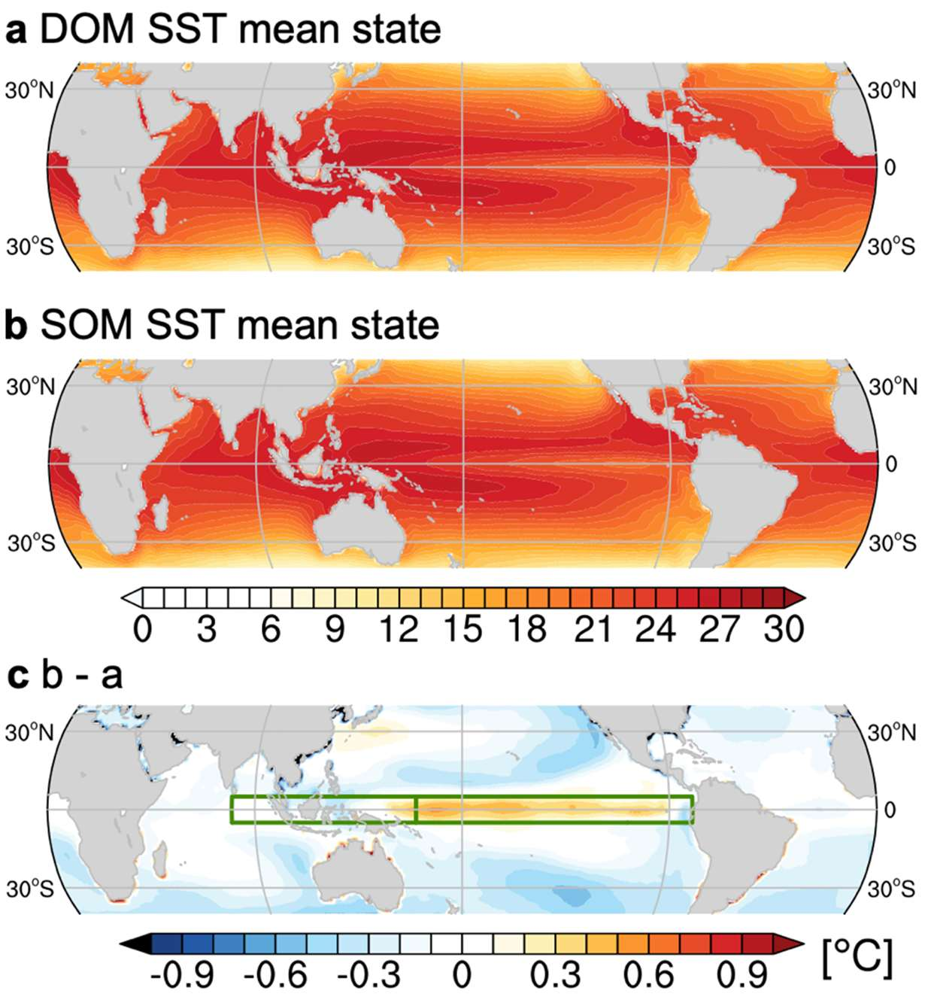
图 S1. 比较 a，全耦合模式（DOM）与 b，平板海洋模式（SOM）的平均态海表温度（SST），二者分别由各自长达 300 年的工业化前控制模拟计算得到。
Figure S1. Comparison of a, the fully coupled (DOM), and b, the slab ocean model (SOM) mean state SST calculated from each the 300 year-long preindustrial control simulation.
c，b 与 a 之差。
c Difference between b and a.
图 S2Figure S2
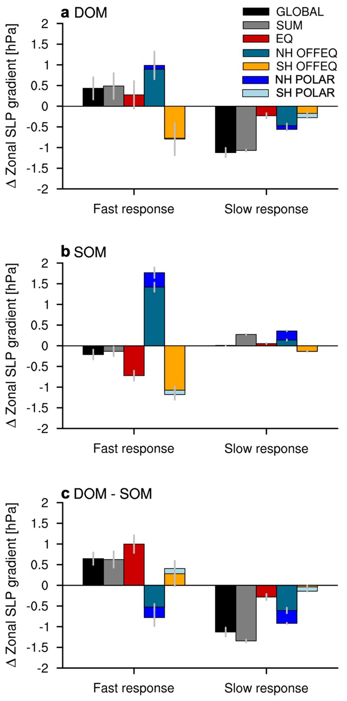
图 S2. 区域辐射强迫对 GLOBAL 中沃克环流响应的贡献。
Figure S2. Contribution of regional radiative forcing to the Walker circulation response in GLOBAL.
热带太平洋海平面气压（SLP）纬向梯度在快速响应（Yr1-20）与慢速响应（Yr101-150 – Yr1-20）中的变化：a，DOM；b，SOM（代表大气过程）；c，DOM 与 SOM 之差（代表海洋动力学的贡献）。
Changes in the tropical Pacific SLP zonal gradient in the fast (Yr1-20) and slow response (Yr101-150 – Yr1-20) in a, DOM, b, SOM (representing the atmospheric processes), and c, the difference between DOM and SOM (representing the dynamical ocean contribution).
正值对应沃克环流增强，负值对应沃克环流减弱。
Positive values correspond to Walker circulation strengthening, negative values to Walker circulation weakening.
灰色竖线表示 95% 置信水平。
Grey vertical lines show the 95% confidence level.
图 S3Figure S3
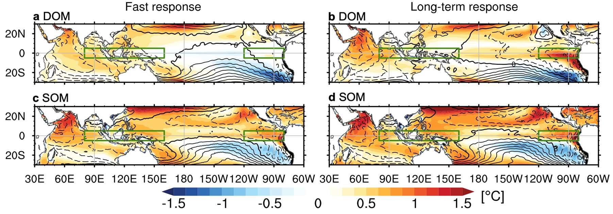
图 S3. GLOBAL 强迫下相对于热带太平洋平均值（80ºW-80ºE 和 30ºS-30ºN）的 SST 响应：a,b 为 DOM，c,d 为 SOM；左侧为快速响应（Yr1-20），右侧为长期响应（Yr101-150）。
Figure S3. Response of SST relative to the tropical Pacific mean (80ºW-80ºE and 30ºS-30ºN) to GLOBAL forcing for a,b DOM, and c,d SOM for the fast response (Yr1-20, left), and the long-term response (Yr101-150, right).
黑色等值线表示相应的 SLP 响应，范围为 -2 hPa 至 2 hPa，等值线间隔为 0.25 hPa。
Black contours mark the corresponding SLP response from -2 hPa to 2 hPa with a contour interval of 0.25 hPa.
负 SLP 等值线用虚线表示。
Negative SLP contours are dashed.
绿色方框表示用于计算沃克环流指数的区域。
Green boxes show the regions used for calculating the Walker circulation index.
图 S4Figure S4
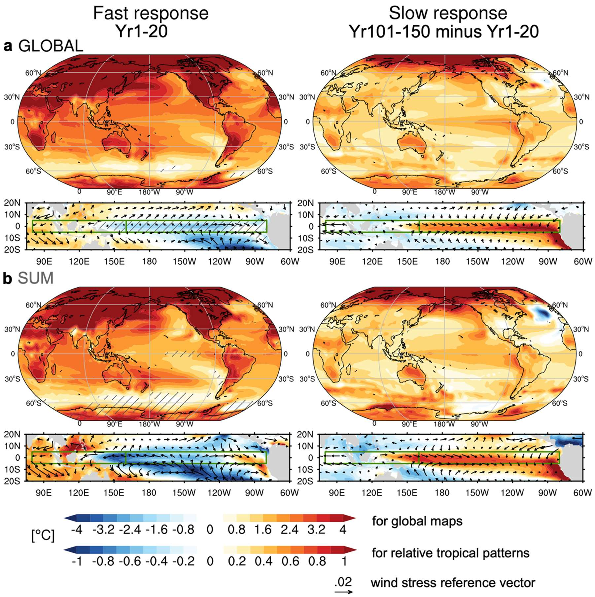
图 S4. DOM 中 GLOBAL 与 SUM 的比较。
Figure S4. Comparison between GLOBAL and SUM in DOM.
a，GLOBAL 与 b，SUM（即所有区域强迫实验之和）中，快速响应（Yr1-20，左列）和慢速响应（Yr101-150 – Yr1-20，右列）的空间分布：地表气温（全球地图中的填色）、相对于热带太平洋平均值的 SST（区域地图中的填色）以及海洋风应力（箭头）。
Spatial distribution of surface air temperature (shading in global maps), and SST relative to the tropical Pacific mean (shading in regional maps) and ocean wind stress (arrows) for the fast response (Yr1-20, left column) and the slow response (Yr101-150 – Yr1-20, right column) in a, GLOBAL and b, SUM (i.e., the sum of all regional forcing experiments).
阴影线标示在第 90 百分位水平上不显著的 SST 响应。
Hatching marks insignificant SST responses at the 90th percentile level.
绿色方框标示用于计算纬向海表温度梯度的西部赤道太平洋（WEP）和中东部赤道太平洋（CEP）。
Green boxes mark the western (WEP) and central-to-eastern equatorial Pacific (CEP) used for calculating the zonal SST gradient.
图 S5Figure S5
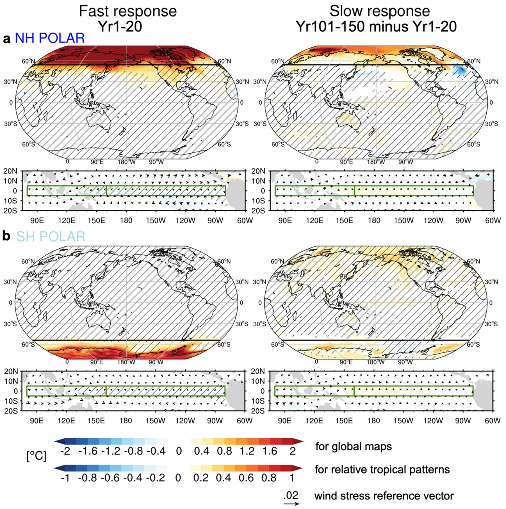
图 S5. POLAR 实验中的空间增暖型态。
Figure S5. Spatial warming pattern in the POLAR experiments.
格式与图 S4 相似，但这里 a 为 NH POLAR，b 为 SH POLAR。
Similar format to Fig. S4 but for a, NH POLAR and b, SH POLAR.
图 S6Figure S6
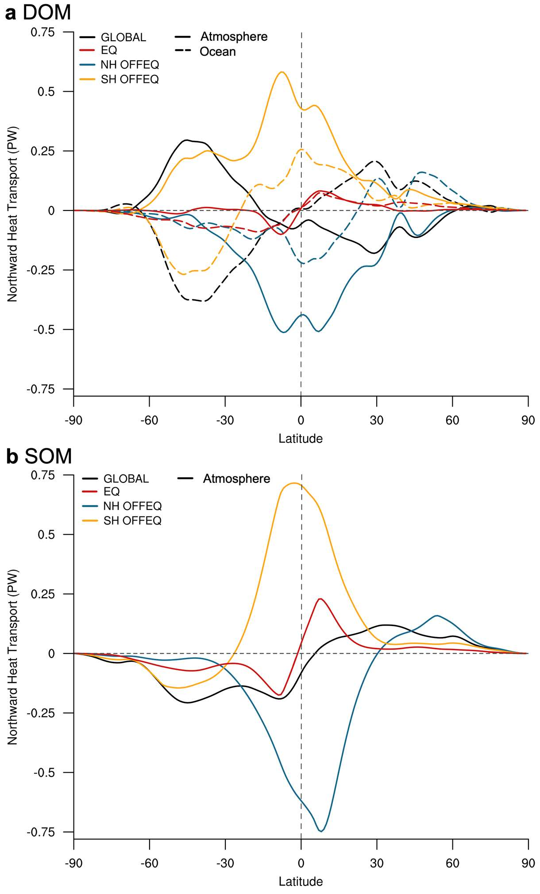
图 S6. a，DOM 与 b，SOM 中大气（实线）和海洋（虚线）的经向热输送响应。
Figure S6. Response of the atmospheric (solid lines) and oceanic (dashed lines) meridional heat transport for a, DOM and b SOM.
海洋热输送由净表面能量通量推断，大气热输送则由大气顶（TOA）辐射和净表面能量通量间接计算。
Oceanic heat transport is inferred from the net surface energy flux and atmospheric heat transport is computed indirectly from TOA radiation and net surface energy fluxes.
图 S7Figure S7
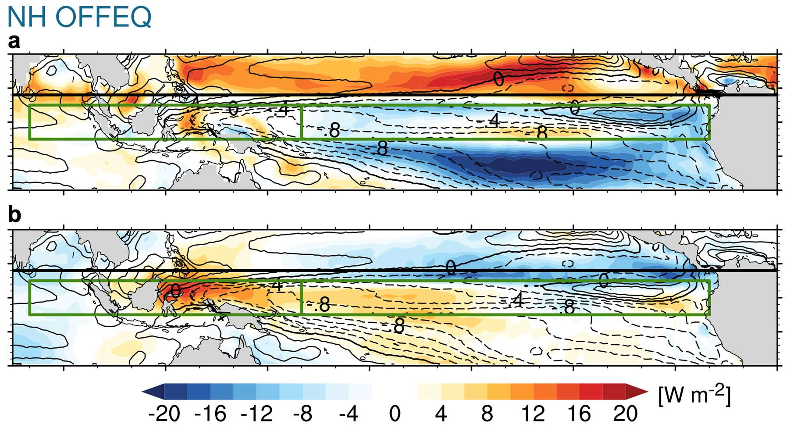
图 S7. 表面能量对 NH OFFEQ 强迫的响应。
Figure S7. Surface energy response to NH OFFEQ forcing.
a，牛顿冷却项以外的过程导致的潜热通量变化（即 ΔLH − αL̅H̅ ΔSST，其中 α = Lᵥ/(Rᵥ T̅_S²)，Lᵥ = 2.5 x 10⁶ J kg⁻¹，Rᵥ = 461.5 J kg⁻¹ K⁻¹，上横线表示工业化前控制实验中的气候态平均值）；b，短波云辐射效应；通量向下定义为正。
a, Changes in latent heat flux arising from processes other than the Newtonian cooling term (i.e., ΔLH − αL̅H̅ ΔSST where α = Lᵥ/(Rᵥ T̅_S²) with Lᵥ = 2.5 x 10⁶ J kg⁻¹, Rᵥ = 461.5 J kg⁻¹ K⁻¹, and the overbar denoting the climatological mean in the preinductrial control experiment) and b, shortwave cloud radiative effects, with positive fluxes defined downward.
查看源公式排版
以下为同一句源公式的 MathML 排版显示，不改写原文表达。
两个面板中的等值线表示 SST 响应（冷却用虚线，增暖用实线）。
Contours in both panels show the SST response (dashed for cooling and solid for warming).
所有量均显示相对于热带平均值的快速响应（Yr1-20）。
All quantities are shown for the fast response (Yr1-20) relative to the tropical mean.
图 S8Figure S8
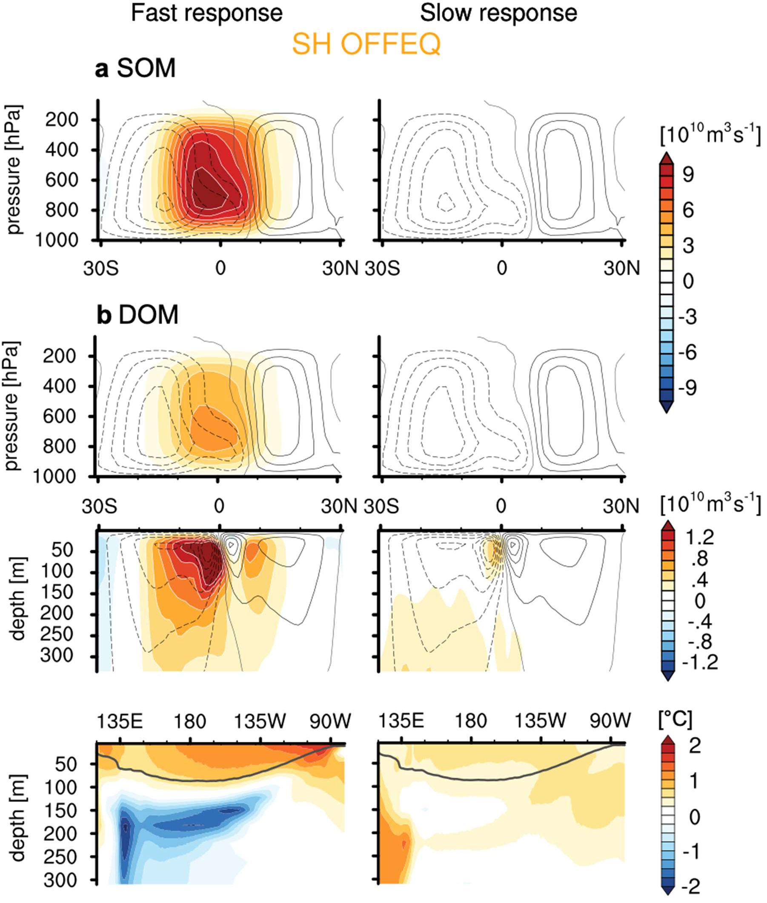
图 S8. 大气和海洋环流及温度对 SH OFFEQ 强迫的响应。
Figure S8. Atmospheric and oceanic circulation and temperature response to SH OFFEQ forcing.
与图 6 相似。
Similar to Fig. 6.
图 S9Figure S9
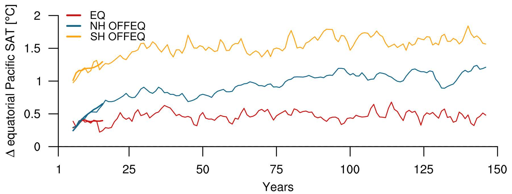
图 S9. 赤道太平洋增暖幅度的时间序列。
Figure S9. Time series of equatorial Pacific warming amplitude.
区域强迫实验中一个成员在 80ºE-80ºW、15ºN-15ºS 之间的赤道太平洋地表气温响应的 10 年滑动平均值（细线）。
The 10-year running averages of equatorial Pacific surface air temperature response between 80ºE-80ºW and 15ºN-15ºS for one member of regional forcing experiments (thin lines).
以粗线叠加显示前 20 年的 30 成员平均响应。
The 30-member mean response for the first 20 years is overlaid in thick lines.
请注意，对于区域强迫实验，大集合仅针对前 20 年生成。
Note that the large ensemble is produced only for the first 20 years for regional forcing experiments.
图 S10Figure S10
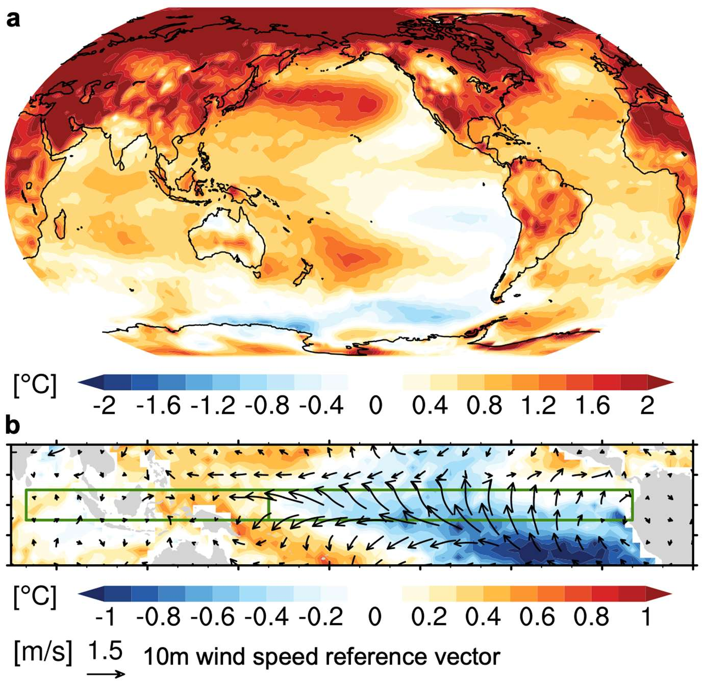
图 S10. ERA5 再分析中的线性趋势。
Figure S10. Linear trends in ERA5 reanalysis.
观测到的变化：a，全球地表气温；b，相对于热带太平洋平均值的 SST（填色）以及 10m 风速（箭头，m/s）。
Observed changes in a, global surface air temperature and b, SST relative to the tropical Pacific mean (shading) and 10m wind speed (arrows, m/s).
将线性趋势乘以 45 年，得到 1979-2024 期间的总变化。
Linear trends are multiplied by 45 years to obtain the total change over the period 1979-2024.
与图 3a 比较。
Compare with Fig. 3a.